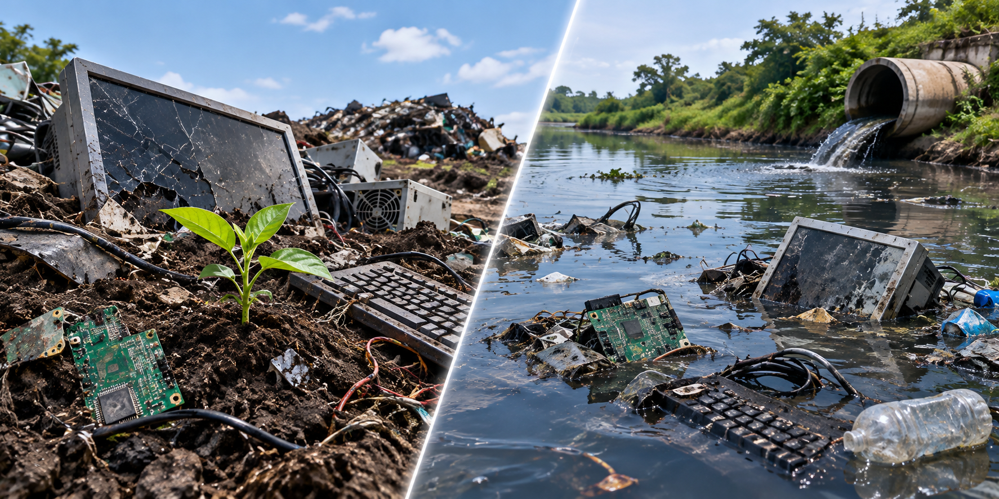

Contaminación del suelo y agua por RAEE

Cuando los aparatos eléctricos y electrónicos (AEE) obsoletos o averiados son descartados de manera inadecuada en botaderos informales, terrenos eriazos o mezcla de basura doméstica, pierden su condición de bienes útiles para convertirse en una fuente activa de contaminación ambiental conocida como E-WASTE.
Al quedar expuestos a la intemperie (lluvia, radiación solar y humedad), las carcasas plásticas y componentes internos se degradan físicamente. Este fenómeno desencadena la liberación de lixiviados —líquidos altamente tóxicos cargados de metales pesados— que se infiltran en el subsuelo, alterando las propiedades fisicoquímicas de la tierra y alcanzando gradualmente los mantos acuíferos subterráneos.
Cifras globales sobre RAEE y contaminación hídrica
La gestión deficiente de los residuos electrónicos provoca que millones de toneladas de plásticos y metales pesados terminen en vertederos no controlados, ríos y océanos:
| Indicador / Impacto | Cifra Registrada | Descripción y Fuente |
|---|---|---|
| Generación mundial anual de RAEE | 62 millones de toneladas | Volumen total generado en un año a nivel global, equivalente a llenar 1.55 millones de camiones de 40 toneladas. (Fuente: ONU / UNITAR - Global E-waste Monitor) |
| RAEE sin gestión formal ni reciclaje | 77.7% (48.2 millones de t) | Porcentaje de residuos electrónicos que no se recolectan formalmente y terminan en botaderos, quemas o filtrándose hacia ríos y mares. (Fuente: ONU / UNITAR) |
| Plásticos de RAEE en flujos no controlados | ~14 millones de toneladas | Plásticos con retardantes de flama bromados presentes en los RAEE mal gestionados que se fragmentan en microplásticos marinos. (Fuente: PNUMA / Convenio de Basilea) |
| Mercurio y plomo liberados al ambiente | 58 toneladas de mercurio y 45,000 t de plásticos con BFR | Sustancias tóxicas liberadas anualmente por el desmantelamiento informal, contaminando cuencas hidrográficas y fauna marina. (Fuente: OMS / ONU) |
| Contaminación plástica en los océanos | 8 a 10 millones de toneladas/año | Residuos sólidos y microplásticos (incluyendo fragmentos de carcasas y cables electrónicos) que llegan anualmente al mar desde las costas y ríos. (Fuente: UNESCO / ONU Medio Ambiente) |
Nota: Las estimaciones exactas de vertido directo de RAEE al mar se integran dentro de los flujos de residuos no documentados (77.7%) que desembocan en cuencas hidrográficas y zonas costeras.
Explora a profundidad los contaminantes críticos
Haz clic en cada componente químico para conocer su origen tecnológico y el daño específico que provoca:
💧 Plomo (Pb) — Pantallas CRT, soldaduras y circuitos impresos
Origen: Utilizado masivamente en la soldadura de componentes electrónicos y en el vidrio de tubos de rayos catódicos de televisores y monitores antiguos.
Impacto ambiental y en salud: Al lixiviar hacia el suelo, es retenido por las capas superiores donde interfiere con la actividad microbiana agrícola. En seres humanos, actúa como una neurotoxina acumulativa que afecta el sistema nervioso, renal y hematopoyético.
🔋 Cadmio (Cd) — Baterías recargables portátiles y semiconductores
Origen: Presente en acumuladores de níquel-cadmio (Ni-Cd), interruptores antiguos y ciertos tipos de pigmentos termoplásticos.
Impacto ambiental y en salud: Posee una alta movilidad en suelos ácidos. Es absorbido con gran facilidad por las raíces de las plantas, bioacumulándose en la cadena trófica y generando daños graves en el tejido óseo y tubular renal.
🌡️ Mercurio (Hg) — Lámparas fluorescentes, pantallas planas y sensores
Origen: Utilizado en la retroiluminación de pantallas LCD planas, interruptores de posición y celdas de conmutación.
Impacto ambiental y en salud: Al entrar en contacto con cuerpos de agua, los microorganismos acuáticos lo transforman en metilmercurio, un compuesto orgánico altamente tóxico que se concentra en los organismos de la cadena alimentaria marina.
🧪 Retardantes de Flama Bromados (BFR) — Plásticos y carcasas de computadoras
Origen: Compuestos químicos añadidos a los plásticos de impresoras, CPUs y portátiles para reducir su inflamabilidad.
Impacto ambiental y en salud: Son sustancias extremadamente persistentes en el medio acuático que actúan como disruptores endocrinos, alterando el equilibrio hormonal y reproductivo de la fauna silvestre.